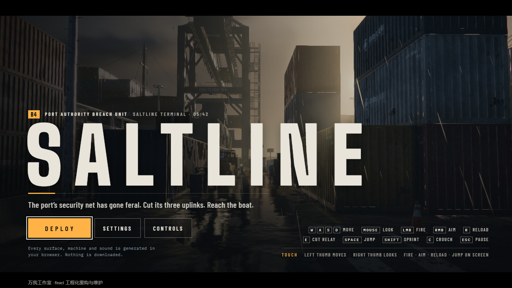
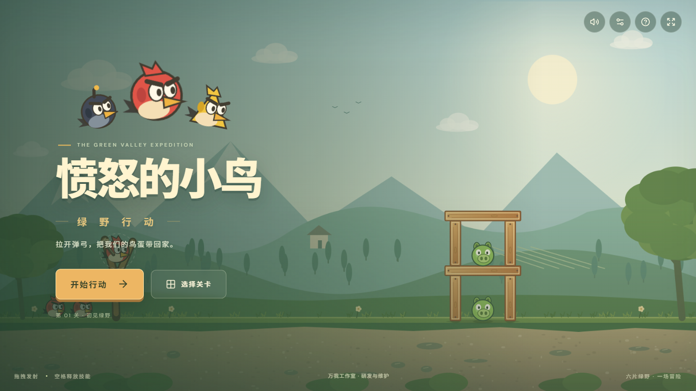
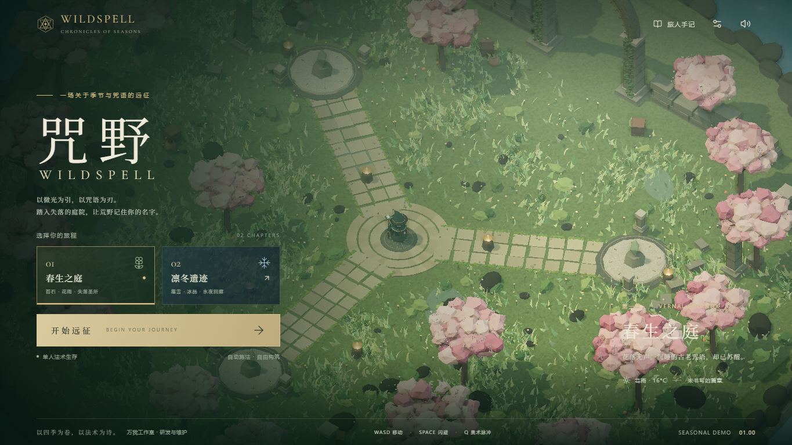

在浏览器里，玩一点不一样的。
从雨中港口，
到绿野弹弓。
一场港口撤离、六关弹弓挑战，
与双季法术远征。
选择一款游戏，直接开始。
也可以打开源码，看看它是如何运行的。
探索三款游戏 ↓

SALTLINE第一人称港口行动
01 突入 · 切断中继 · 撤离
SALTLINEReact 可维护版
穿行雨中的集装箱码头，对抗无人机与机械犬。切断三个中继，抵达船只撤离。本版本保留原作玩法，完成
React 工程化重构。
程序化港口 · 射击与近战 · 撤离任务
上手操作
WASD 移动，鼠标瞄准与射击，R 换弹，按住
E 切断中继。推荐键鼠游玩。

GREEN VALLEY弹弓物理闯关
02 拉弓 · 碰撞 · 连锁破坏
愤怒的小鸟绿野行动
拉开弹弓，用红怒、疾风和黑火击破绿猪的防线。在六个关卡里，找准木材、玻璃与石材搭成的结构弱点。
六个关卡 · 三种小鸟 · 星级挑战
上手操作
拖拽小鸟，松手发射；飞行中点击或按
空格 使用技能。支持鼠标与触屏。

WILDSPELL俯视角法术生存
03 探索 · 构筑 · 季节守望者
咒野WILDSPELL
踏入春生之庭与凛冬遗迹，收集灵息、组合自动施放的法术。唤醒三座祭坛，迎战季节守望者，每次远征重新构筑。
春冬双关 · 法术组合 · Boss 战
上手操作
WASD 移动，空格 闪避，Q
释放奥术脉冲。移动端使用摇杆与技能按钮。